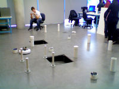

ABOUT
Hello!
I'm Zach Rasavanh, an aspiring computer engineer with focus areas in software development and information security. I attend Iowa State University and am on pace to graduate in December, 2013.
I have technical work experience from a number of companies in the industry including Northrop Grumman and Shazam doing software development and product management. My goal is to create products that change and affect the way we interact with the world.
My passion is to advance the technology in the living room. Particularly, I want to change the way we watch and view TV, the way we entertain ourselves, and the way we entertain our guests. I believe there is a vastly untouched market for a modern home entertainment experience and I plan on being a part of the war for the living room.
For more info here's my resume.
Aside from the serious stuff, I play a lot of music, love ultimate frisbee, like long walks on the beach, and enjoy eating out.
Please look around and make sure to take a look at the Projects tab to see what I've been up to recently. Also, look under Contact and shoot me an email.
PROJECTS
If you find this, you win.

PhotoQuest
PhotoQuest is an Android app that a few classmates and I made to solve the problem of reverse image searching. Imagine being able to take a picture of any object, press a button, and receive information about that item; like Googling but for pictures. Our app specializes in shopping results. We pull information from all the major online retailers like Amazon, Ebay, and Walmart to ensure that you are getting the best prices. We used PhoneGap to port the app which enables us to also easily implement the project onto iOS and Windows Phone.
AI and Embedded Systems iRobot
We used onboard sensors to analyze the environment and traverse an iRobot through an obstacle course. The navigation commands were done in seperate rooms to emmulate operating a Mars land rover from Earth. I was the team lead on the project and managed the tasks of each member as well as made sure we met all of the requirements. We chose to implement all of the artificial intelligence and interfaces in C. These interfaces used IR and Sonar data to analyze the environment and create a usable GUI. Types of obstacles in the course were holes in the ground, large pillars, and IR walls.

Pipe-Lined Processor Design
In this project, we implemented a 5 staged pipelined processor that implements the MIPS instruction set. My role was software architect and developer. We used VHDL to virtualize the machine and run test benchmarks that my partner created. This was a semester long project that caused many sleepless nights and large consumptions of caffeine. The design worked perfectly and we ended up getting 100% on the whole thing. Boo-Yah.

ZACHTV
I am working on a set-top box for modern television sets that uses an existing cable stream and represents it in an attractive and interactive manner. I'm tired of the way TV has been presented to me my entire life, and I really think there is a deep market for a fresh television experience. Without giving too much away, my box will change the way people interact with their entertainment and will create a unique home experience that no competitor is reaching.
INTERNSHIPS
Northrop Grumman Corporation
Northrop Grumman is one the largest military contractors in the world and is part of the Big Three (Lockheed Martin, Boeing, and Northrop Grumman). They make the B-2 Stealth bomber, Global Hawk unmanned aircrafts, and are the sole manufacturer of all U.S. aircraft carriers and supercarriers. I was an intern during the summer of 2012 in a software development role. JTT or Joint Targeting Toolbox is the software that the military uses to allocate, instigate, and execute missions to eliminate targets. As a software developer I fixed bugs and implemented new features for later versions of JTT. By the end of the summer, I had solved every bug assigned to me, redesigned the graphical interface, and implemented a full section of the Target Data Matrix.
Shazam
I interned at Shazam during the Fall 2012 and Spring 2013 semesters in the Corporate Security division. My job was to develop security software, manage databases and systems, and implement simple penetration tests on networks. I have a high interest in information assurance and this internship helped me gain perspective on what secure software development really is. Being the only intern on the team, all of my projects were self managed. Thus, all of the product management, design, and development was up to me. I met with my managers regularly to discuss requirements then I would interpret and devlop them myself. These projects ranged from in-house to web applications.
HOBBIES
[ CHESS ] I play chess online nearly everyday because it's awesome and I find it relaxing. The Pirc is my preferred defense and I have a deadly Blackmar-Diemer as white.
[ MUSIC ] Music has always been a huge part of my life. I was in pep band, marching band, jazz and concert band all the way from middle school to senior high playing the trombone. I picked up the guitar sometime during my sophomore year and have expanded my skills to drums and piano. Currently, I play for a number of bands that include church groups and small jam bands with my friends.
[ SPORTS ] Ultimate Frisbee | Soccer | Football | Volleyball
[ LONGBOARDING ] I own a Rayne Amazon and used to have a Bustin Maestro before it got ran over by a car... It's a long story and it wasn't my fault.